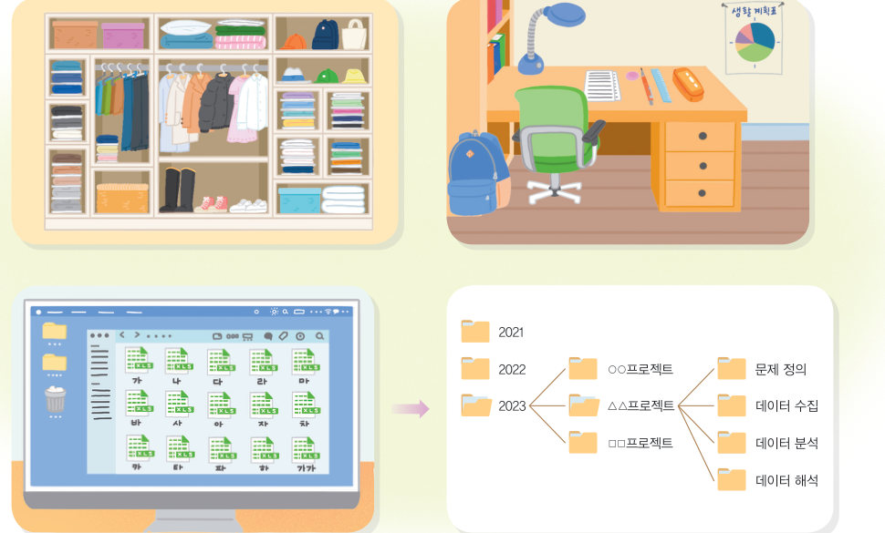
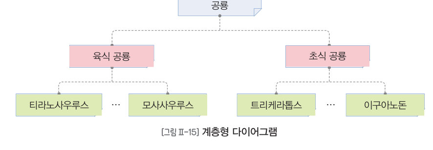
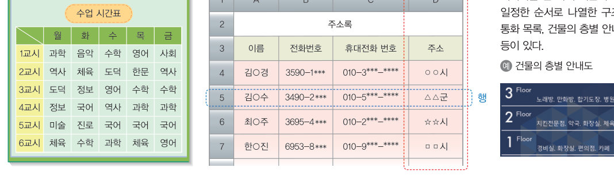
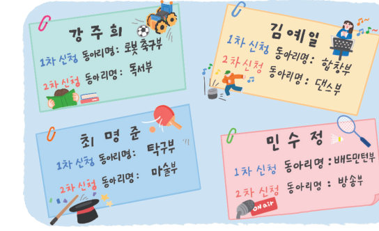
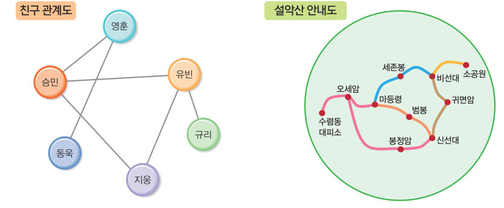

흩어진 쪽지를 표로, 용돈 기록을 나무 모양으로, 친구 관계를 점과 선으로 — 데이터를 구조화해 보자. 그리고 학습 시간과 성적의 산점도, 국가별 이산화탄소 배출량과 음식 물가의 꺾은선그래프를 직접 그려 데이터의 의미를 해석해 보자.
옷장의 옷이나 책상 위의 물건을 종류와 쓰임 등에 따라 정리해 두면 필요한 물건을 빠르게 찾을 수 있고, 관리에 필요한 시간과 노력을 절약할 수 있다. 이와 같이 데이터의 종류와 특성, 사용 목적 등에 따라 데이터를 체계적으로 구분하여 정리하는 것을 데이터 구조화라고 한다. 데이터 구조화는 빠른 데이터 검색과 효율적인 데이터 관리를 가능하게 한다. 또 구조화된 데이터는 시각적으로 표현하기 쉽기 때문에 데이터의 관계 파악과 분석에 활용도가 높다.
표는 데이터를 기준에 따라 행(가로)과 열(세로)의 2차원 형태로 만든 구조이다. 표는 데이터를 속성별로 구분하여 정리할 수 있고, 데이터의 추가, 삭제, 수정이 편리하여 많은 양의 데이터를 관리할 때 주로 사용한다. 표에서 데이터 속성은 열로, 가로로 나열된 데이터 값들의 모음인 데이터 단위(레코드)는 행으로 표현된다. (목록: 한 가지 기준에 따라 일정한 순서로 나열한 구조 — 통화 목록, 건물의 층별 안내도)


| 이름 | 1차 신청 동아리 | 2차 신청 동아리 |
|---|---|---|
| 강주희 | ||
| 김예일 | ||
| 최명준 | ||
| 민수정 |
다이어그램은 점, 선, 도형, 기호 등을 사용하여 데이터의 관계를 표현한 구조이다. 계층형 다이어그램은 시작 지점을 중심으로 여러 지점으로 갈라지는 구조로 데이터 간의 분류 체계와 위계 관계를 쉽게 파악할 수 있다(학급 조직도, 폴더 구조, 책의 목차, 가계도). 그래프형 다이어그램은 데이터를 나타내는 도형(노드)과 관계를 나타내는 선(간선)으로 표현한 것으로, 복잡한 관계를 직관적으로 파악할 수 있다(버스·지하철 노선도, 별자리, 전기 회로도).

해 보기 1 예성이는 부모님께 용돈으로 50,000원을 받고, 설거지를 돕고 2,000원을 받았다. 그리고 할머니께 생일 선물로 30,000원을 받고, 할머니 안마를 해드리고 3,000원을 받았다. 이후 예성이는 매점에서 과자 3,000원, 음료 2,000원을 쓰고, 문구점에서 공책 2권 2,000원, 볼펜 3자루 3,000원을 썼다. 또한 영화관에 가서 영화표 8,000원, 팝콘 7,000원을 사용하였다.
데이터 분석이란 합리적 의사 결정을 위해 수집한 데이터의 의미를 해석하며 유용한 정보를 찾아내는 과정으로, 데이터 수집 및 구조화, 데이터 살펴보기, 그래프로 나타내기, 데이터 의미 해석 등 데이터를 이해하기 위한 일련의 과정을 포함한다. 예를 들어 학습 시간과 성적의 관계를 산점도 그래프(두 속성의 값을 좌표 평면에 점으로 표시)로 나타내면 두 속성 사이의 상관관계를 알 수 있다. 한 데이터가 증가할 때 다른 데이터도 함께 증가하면 양의 상관관계이고, 점의 분포가 직선에 가까울수록 상관관계가 높다.
국가통계포털(kosis.kr)에서 ‘배출원별 온실가스 배출량: 이산화탄소’를 검색하여 국가와 연도(2016~2019)를 설정하고 CSV 파일로 내려받는다(CSV: 속성을 쉼표로 구분한 문자 데이터 형식). 코답에서 ‘시점’을 ‘연도’로 바꾸고 필요 없는 행을 지운 뒤, 가로축을 연도, 세로축을 국가로 하고 ‘연결 선’을 켜면 데이터의 변화를 파악할 수 있는 꺾은선그래프가 나타난다. 미국의 배출량이 월등히 많아 비교가 어렵다면 미국을 빼고 비교한다.
국가통계포털에서 ‘품목별 소비자물가지수(2020=100)’를 검색하여 좋아하는 음식의 최근 10년(2013~2022년) 데이터를 내려받고, 가로축은 시점, 세로축은 음식으로 그래프를 그려 연도별 변화를 비교해 보자. (물가 지수 100 = 2020년 가격)
| 04 표는 데이터를 속성별로 구분하여 정리할 수 있고, 데이터의 추가·삭제·수정이 편리하여 대량의 데이터를 관리할 때 사용한다. | |
| 05 데이터 분석이란 수집한 데이터의 의미를 해석하며 유용한 정보를 찾아내는 과정을 뜻한다. |
| 평가 기준 | 스스로 평가 |
|---|---|
| 컴퓨팅 사고력 실생활 데이터를 표, 다이어그램 등 다양한 형태로 구조화할 수 있는가? | |
| 컴퓨팅 사고력 데이터 간의 관계를 파악하고 데이터에 기반하여 의미를 해석할 수 있는가? | |
| 디지털 문화 소양 응용 소프트웨어를 활용하여 데이터를 그래프로 분석할 수 있는가? |